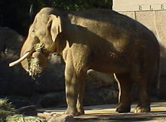
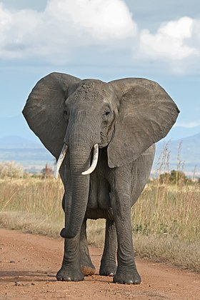

Elephas
Chi Elephas hiện nay chỉ còn một loài duy nhất đang tồn tại là voi châu Á (E. maximus). Các loài khác, chẳng hạn E. recki đã từng tồn tại ở châu Phi, nhưng đã bị tuyệt chủng. Chi này có quan hệ họ hàng rất gần, hoặc có thể là thành viên của chi Mammuthus tức voi Ma mút.
Voi châu Phi
Voi châu Phi (danh pháp khoa học: Loxodonta) là một chi trong họ Elephantidae, là họ của các loài voi. Mặc dù nói chung người ta tin rằng chi này được Georges Cuvier đặt tên năm 1825, nhưng Cuvier gọi nó là Loxodonte. Một tác giả vô danh đã Latinh hóa tên gọi thành Loxodonta và ICZN công nhận tên gọi này là tên gọi chuẩn.[1]
Voi ma mút
Chi Voi ma mút hay chi Voi lông dài (danh pháp khoa học: Mammuthus) là một chi voi cổ đại đã bị tuyệt chủng. Tồn tại ở thế Pliocen, vào khoảng 4,8 triệu năm đến 4.500 năm trước. Có đặc điểm lông dài (xấp xỉ 50 cm), rậm (hơn so với voi hiện tại), ngà dài và cong (hoá thạch ở Xibia có ngà dài 3,5 m), răng voi ma mút rất dài, cong quặp vào trong, dài nhất tới 5 cm, chân sau ngắn nên trọng tâm toàn thân nghiêng về phía sau, vai nhô cao. Chân chỉ có 4 ngón (kém 1 ngón so với voi hiện nay), da dày. Voi ma mút có răng lớn, sắc cạnh, thích hợp cho nghiền nát cỏ. Vòi của voi ma mút có hai chỗ lồi giống như ngón tay, một ở phía trước và một ở phía sau, giúp chúng dễ dàng túm lấy cỏ. Da màu đen, nâu và nâu đỏ, lông vàng, cao từ 3 đến 3,3 m.